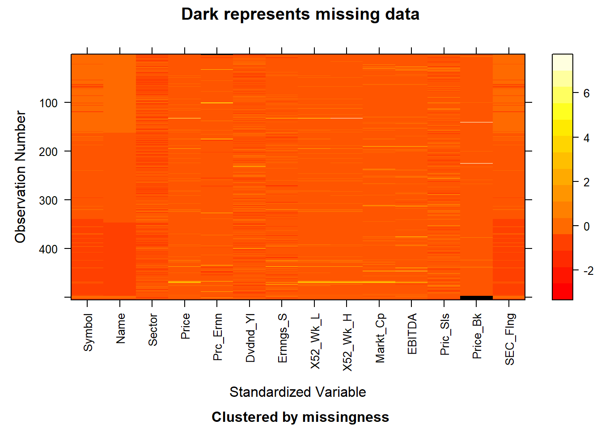

Chapter 4 Missing values
4.1 US Stock
## [1] 0The first graph shows the missing data in the “Final_Project” dataset that tells the whole performance of the US Stock market. As we could see that there are no missing values shown in this data set. Therefore, there is no further processing that we need to make.
4.2 SP500 Constitutent
## [1] 10## Symbol Name Sector Price Price_Earnings
## 0 0 0 0 2
## Dividend_Yield Earnings_Share X52_Week_Low X52_Week_High Market_Cap
## 0 0 0 0 0
## EBITDA Price_Sales Price_Book SEC_Filings
## 0 0 8 0
The second graph shows the information on the missing value of the data set “constituents_financials”. There are 10 values missing in it. Specifically, there are 2 values missing from Price_Earnings, and there are 8 values missing from Price_Book.
## [1] 12## Sector 2021 2020 2021_CHANGE high
## 0 0 0 0 0
## election_1 covid_low pre-covid_hi election_2 bear_low
## 0 0 0 0 1
## bull_high prior_bear_low prior_bull_high 2019 2018
## 1 1 1 0 0
## 2017 2016 2015 2014 2013
## 0 0 1 1 1
## 2012 2011 2009 1999 1989
## 1 1 1 1 1## [1] "Energy" "Materials"
## [3] "Industrials" "Consumer Discretionary"
## [5] "Consumer Staples" "Health Care"
## [7] "Financials*" "Information Technology"
## [9] "Communication Services**" "Utilities"
## [11] "Real Estate*"## id key value missing
## 1 Energy X2021 0.02671454 no
## 2 Materials X2021 0.02563620 no
## 3 Industrials X2021 0.07779999 no
## 4 Consumer Discretionary X2021 0.12543272 no
## 5 Consumer Staples X2021 0.05876855 no
## 6 Health Care X2021 0.13285500 noThe third graph shows the information on “500-sector-representation”. We could directly see from the graph that the green ones represent the missing values from that part. Therefore, all missing values are within the “Real Estate” sector. There are 12 in total missing values. Specifically, the values “bear_low”, “bull_high”,”prior_bear_low”, “prior_bull_high” and the year 1989, 1999,2009, 2011,2012,2013,2014 and 2015’s values are missing as well. There are no values missing from other sectors and other columns.